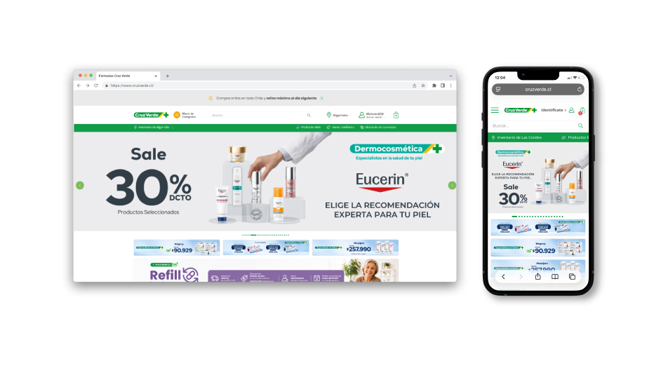
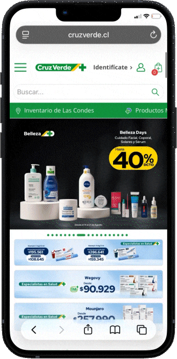
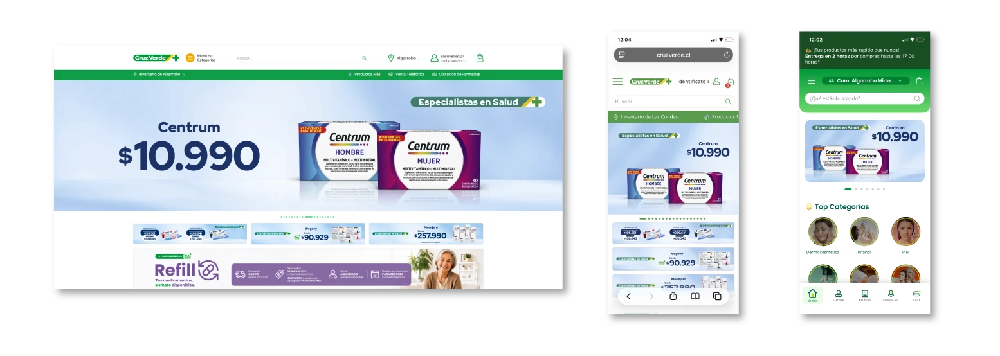
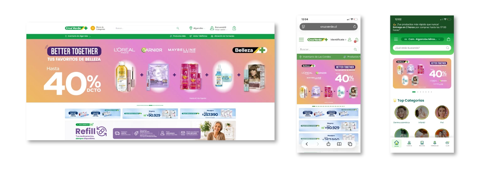
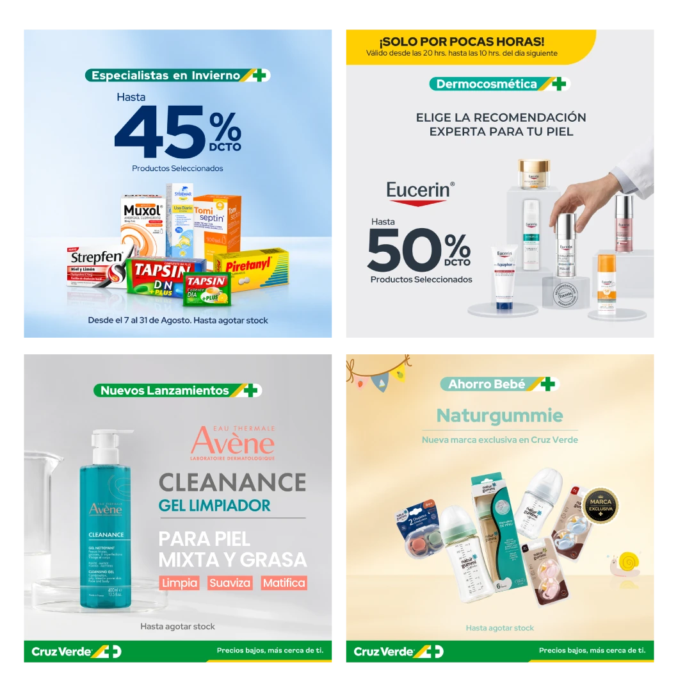
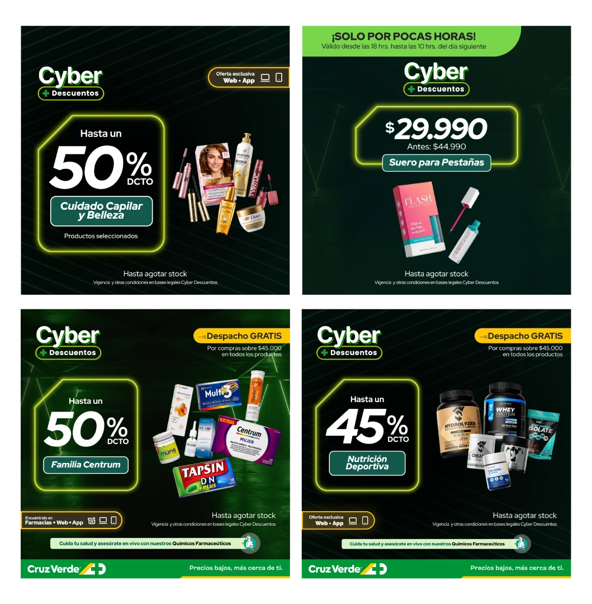
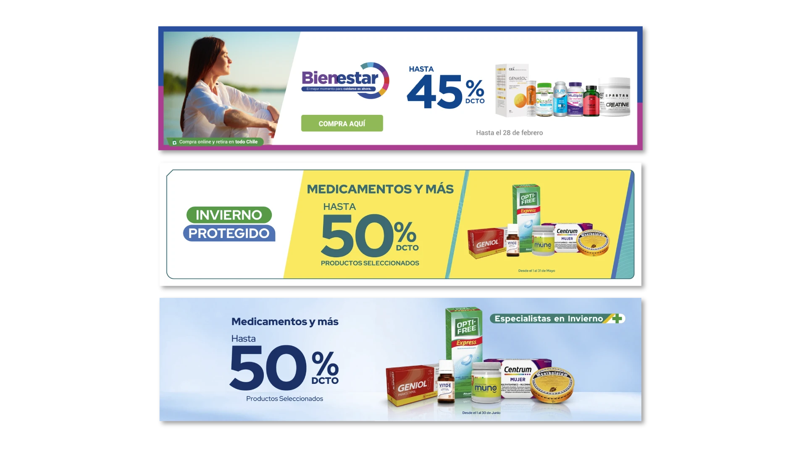
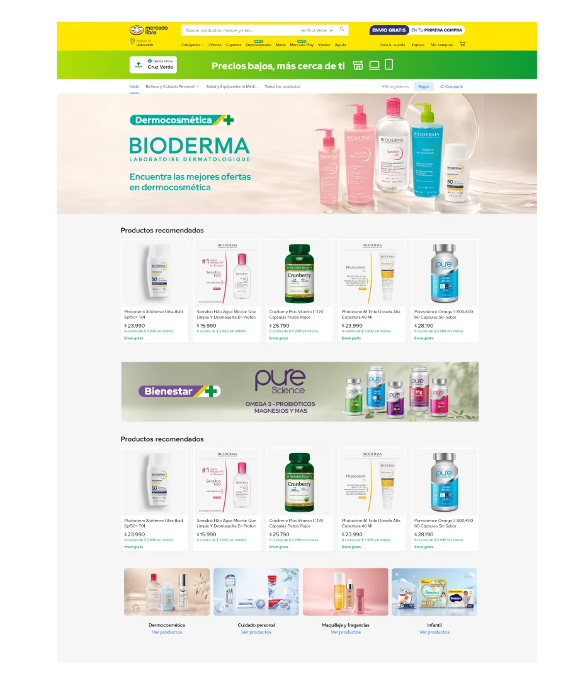
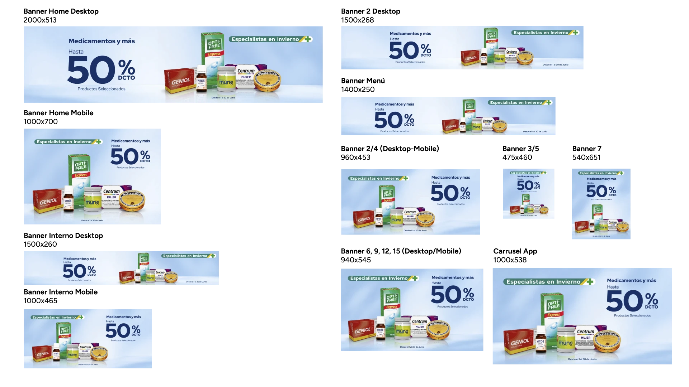

Diseño gráfico y web para e-commerce perteneciente al rubro farmacéutico de una de las cadenas de farmacias más reconocidas del país. Desarrollo de piezas para el sitio web y aplicación móvil, como también para publicidad en redes sociales.
2024-2026
Diseñadora gráfica
Illustrator, Photoshop, After Effects

Cruz Verde es una de las cadenas de farmacia y retail de salud más grandes del país. Su plataforma digital maneja un flujo masivo de usuarios e interacciones diarias. Además de la venta de productos farmacéuticos, la web y publicidad se preocupa de promocionar las diversas categorías que tiene, como dermocosmética, cuidado personal, belleza, entre otros, además de servicios como las asesorías con dermoconsejeras y quimicos farmacéuticos o el recientemente agregado sistema de refill.
El reto como diseñadora para el ecosistema digital de Cruz Verde consiste en mantener la coherencia visual entre piezas para la web, como las piezas para marketing, en una interfaz que recibe una constante actualización de contenidos. Por otra parte, además de las gráficas propias, se deben incorporar las marcas patrocinadas, sin saturar la información ni interferir en la experiencia de navegación. Por último, dada la participación de Cruz Verde en hitos comerciales masivos, como Cyber Day, Black Week, Friday, entre otros, se debe responder a una alta exigencia de entregables, manteniendo estándares de calidad en tiempos acotados.

La tarea principal mes a mes es el diseño y diagramación de los diversos banner web que se renuevan periódicamente. En el flujo de trabajo este es el paso inicial, ya que de estas piezas dependen los anuncios para Meta, Google Ads, medios externos entre otros. Una vez definida la iteración y de acuerdo a la programación de la web, se desarrollan las adaptaciones mobile para el sitio y también para la app, ya sea con la gráfica de la marca o a partir de KVs entregados por marcas aliadas.


Diseño de contenido estático y animado para campañas de performance (Meta Ads, Google Ads y redes sociales) enfocadas en maximizar engagement y conversión hacia plataformas e-commerce.


Colaboración activa en la renovación de la marca y cambio de estilo gráfico en los banner para el sitio web y app móvil de Cruz Verde. Creación de material digital y guías de estilo para garantizar coherencia tipográfica, contraste accesible y jerarquía de los llamados, de acuerdo a los estándares de cliente.


Creación de plantillas maestras modulares y recursos reutilizables para la producción acelerada de formatos responsivos. Gracias a esto se reducen los tiempos de entrega del equipo de diseño, los cambios de cliente se ejecutan de manera más rápida y se minimiza el margen de error en la producción masiva de piezas.
